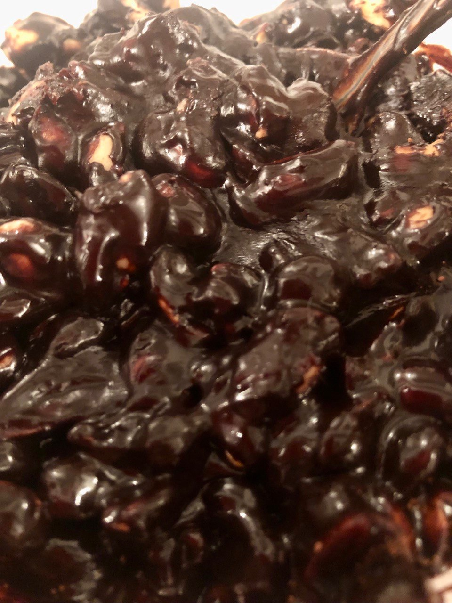

F*ing cool!
Soft Nut Chocolate

Description
ingredients
- peanuts
- honney
- butter
- cocoa powder
cooking
- Firstly, fry your peanuts. Make sure they are golden-brown and hot.
- Secondly, put all ingredients in a boul and mash for a while.
- Let it cool down and enjoy :)